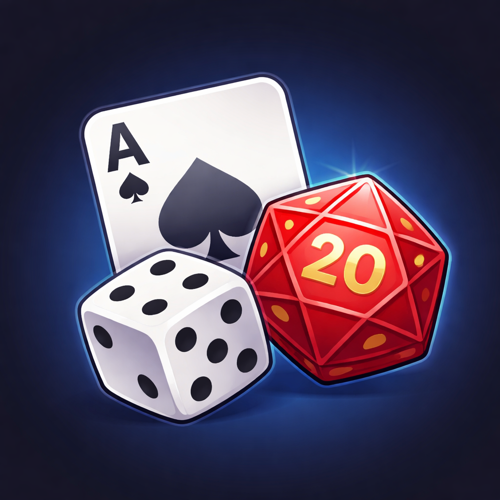
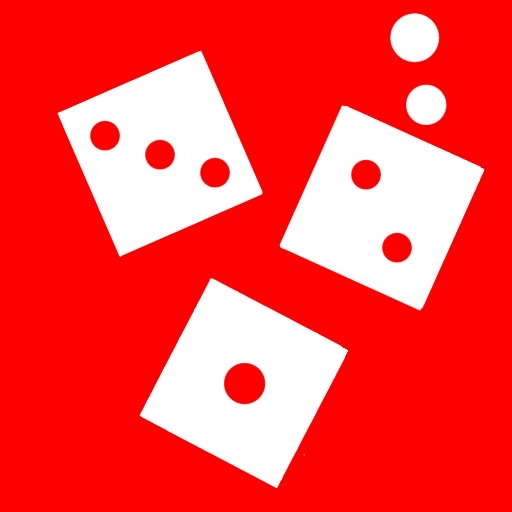
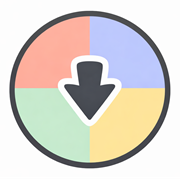
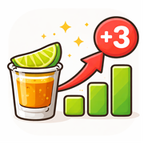
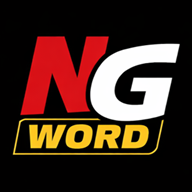
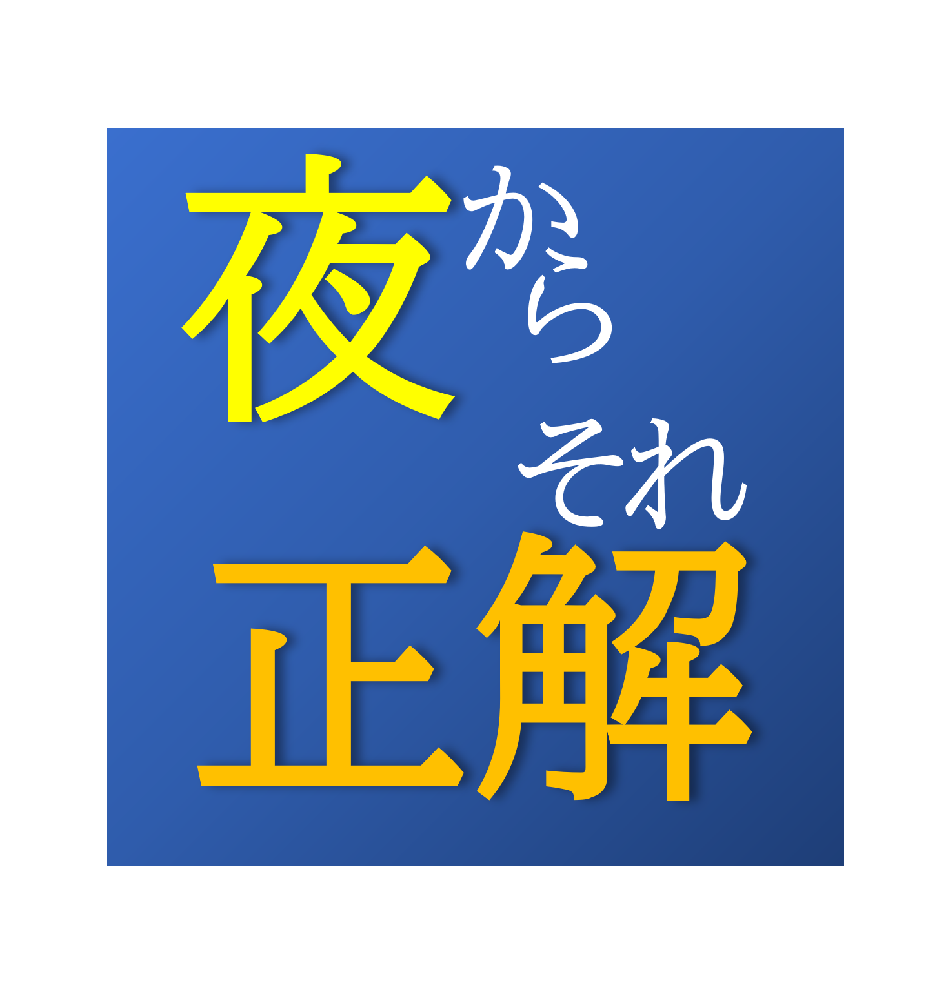

Welcome to SLEES
宴はすでに始まっている。
更新履歴
サイト概要
このサイトは我々"SLEES"の活動を手助けする超絶革新的なWebサイトです。
便利なアプリケーション、楽しいアプリケーション、オリジナルカクテルや飲みゲーのまとめを載せていきます。
DX推進課として色々と製作出来たらなと考えています。
また、何か作って欲しいアプリ、考えたカクテル、考えた飲みゲーなどあれば教えてください。迅速な対応をいたします。
あ、それとアプリケーションのアイコンのほとんどがAIにとりあえず作らせたものなのでアイコンデザイン募集しています。🙇
サイトの使用ルール
【やっちゃダメなこと】
・リンク共有(管理者と代表者の２名はメンバーへのリンク共有のみ可)
・ブックマーク
・管理者に対するサイトやアプリへの罵詈雑言
【やってもいいこと】
・ホーム画面に追加
・外部交流時、アプリの使用(必ずメンバーの端末でのみ開くこと)
・外部交流時、飲みゲーやカクテルの参照
・管理者に対するサイトやアプリへの提案
・管理者に対する称賛
違反者へは重めの罪を科します。
SLEESみんなで楽しく飲んで騒いで笑いましょう。
アプリケーション
メンバーシャッフラー
車やチーム分けにおすすめ！固定メンバーの設定もできる優れものだ。

ランダマイザートランプやダイスなど、乱数を出力。すごろくやゲームに使用できる。

酒カスチンチロ回せ！飲め！騒げ！
サンゾロがバグってます。

ランダムルーレット複数の選択肢で迷った時におすすめ！
カジノルーレット
カジノにあるルーレットのルーレット部分のみ作りました。
賭け部分は好きなようにしてください。

ドリンクカウンター誰が何杯飲んだか分かりやすく記録します。
飲みゲーのデバッグなどにおすすめ。

NGワードゲームNGワード生成アプリ。画面タップでワード切り替え可能。
収録ワードは1000語以上！!
ホーム画面に追加すると完全全画面表示になるよ。

夜からそれ正解テレビ番組『リンカーン』の企画、「朝までそれ正解」のお題ジェネレーターです。
お題にあてはまる単語をみんなで出して議論しましょう。
ホワイトボードがあると便利かも。
ムフフなオトナモードもあります。